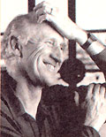
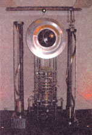

An Interview with Stewart Brand.
In 1968 Stewart Brand published the Whole Earth Catalog, a handbook (some say bible) of environmental tools and guidelines needed for an independent lifestyle. In 1970, in the thick of the counterculture, MOTHER was there to embrace the excitement. "Stewart Brand is responsible," said John Shuttleworth, the founder and original editor, when asked where he got the idea for the magazine. "I was inspired by the Whole Earth Catalog." Thirty years and numerous projects later, Brand continues to ins pire. After winning the National Book Award in 1972 for The Last Whole Earth Catalog, Brand dove headlong into the possibilities of computer technology, global community and responsible building. In 1984 he founded The Well, one of the first online community chat rooms to stake a claim on the Internet. He has been a visiting scientist at the Massachusetts Institute of Technology and has written numerous books, including How Buildings Learn, an award winning book on the possibilities of ecologically sound design. In 1986 the multi-talented Brand also founded the Global Business Network.But his latest project - The Long Now Foundation - may be the most ambitious one thus far. With co-founder Danny Hillis and an international group of artists, scientists and environmentalists, Brand has built the Millennium Clock, a working timepiece based on 18th-century technology that will record seconds, minutes and hours for the next 10,000 years. Part of the project includes the beginnings of a 10,000-year library, which will eventually be buried inside a mountain in Nevada along with the clock . The goal, says Brand, is to help civilization break free from the immediacy and rush of information, and help to broaden humanity's perspective. Talk about forward thinking!
SAM MARTIN AND MATT SCANLON FOR Mother: This is a homecoming of sorts.MOTHERhas mentioned you many times over the years.
STEWART BRAND: Well, you're one of the very few magazines that's actually aware of its own past.
MOTHER:One funny thought occurred to us as we were reading about The Well. At what point are you and AlGore going to have a Greco-Roman wrestling match to see who really invented the Internet?
SB: Well, I certainly didn't, and he did a great deal more than we did. The fact is that Al Gore - the Gore Bill - created the initiative within which the present Internet was invented. And so, if you look at his original statement, it's dead accurate.
MOTHER:The Well was an incredibly forward thinking communication device.
SB: It seemed very late in the day at the time. This was in '84 or '85 and bulletin board systems had been around for many years at that point, and several other online teleconference systems had been around for years. Looking back now, it seems pioneering, but at the time it was just kind of taking the tools that everybody knew about and doing one other thing with them.
MOTHER: From the WholeEarth Catalog to The Well, from How BuildingsLearn to The Long Now Foundation, is there a common thread that runs through your projects?
SB: Well, I guess they're all about civilization and the Whole Earth Catalog was, I suppose, about empowering individuals. How Buildings Learn was really about the necessity for change in buildings and the pace of change in buildings. That part of my work deals with the infrastructure of civilization. Basically, the Long Now Foundation is the clock. It's about engaging the time-framing of civilizations, and considering the current global civilization - the ongoing story from when we first clustered into villages and started farming - we're talking about 10,000 years. The idea of the Long Now includes the last 10,000 years to the next 10,000 years.
MOTHER:What is the reason for this endeav or? Are you concerned that civilization is moving too fast?
SB: No. I think that speed is by and large good, but speed is not the only good thing. The paradox that makes something like the clock for the Long Now - the 10,000 year clock - worth doing is that we've got increasing scientific and, to some extent, cultural framing that lets us think intelligently about very long periods of time, both backward and forward. Forward in the sense that we are getting an idea of how the dynamics of climates work and how the oceans work. These are very long period dynamics that we're in the thick of. At the same time, we've got a very robust and powerful civilization, having influences that affect the scale of power and the scale of time.
Part of the robustness of the civilization is that a lot of things are moving very quickly - technology is moving rapidly, the global economy is moving rapidly - and to some extent that shortens our attention span because we're looking at the next financial quarter or the next election.
MOTHER: Do you consider computers, specifically, to be part of the reason for the speeding up or the shorter attention span?
SB: Well, it's the most clear and present domain of great acceleration. But it's not the only accelerating domain. Biotechnology clearly is taking off in that way, and it's also self-accelerating.
MOTHER:So what's your take on genetically modified foods? Are they something we should be concerned about?
SB: Get used to them (laughs).
MOTHER:Kraft has just recalled a certain line of taco shells because the company was unsure of the origin of the genetically modified corn. It brought up the whole labeling issue again.
SB: What you've got is a situation where a lot of these corporations are now being jerked around by their marketing people who are worried about looking bad - and probably marketing people are not the wisest heads in these corporations (laughs). So there's going to be undoubtedly bizarre behavior in all directions as a result of that. I think, generally, that the genetically modified stuff - food, animals, people and everything else - will be in some ways like computers. There's going to be some stuff that you lose and you regret. Then there's some stuff you gain and immediately take for granted.
MOTHER:Our readers are actually twice as likely to own computers as the average American house. It's funny that while embracing a country, back-to-basics lifestyle, we've also decided that computers can help out quite a bit.
SB: I did an interview a year ago with Freeman Dyson, a physicist and writer from Princeton. He talked about the technologies that he thinks will basically help everybody - and they help everybody, in part, by being doable in a rural mode. [The Internet] basically empowers rural situations and rural people.
MOTHER:Where did you get the name The Long Now?
SB: That comes from Brian Eno, who's one of the board members.
MOTHER:The musician?
SB: [Yes.] It's actually an urban story. Brian Eno, the musician from England, was in New York for a few years after he became a pop star and found that the artists he was hanging out with had a very tiny view of where "here" was - it was basically their apartment. They didn't care what was going on in the street. They had a very narrow view of when "now" was - which was basically next week and last week. They were just jamming ahead on their own personal careers with no particularly deep sense of either public responsibility or even a full sense of themselves beyond the immediate fashion.
Anyway, he decided there and then that he wanted to live in a place that had a big here and a long now, and he wrote that in his notebooks. Later, when we were discussing what to call the 10,000-year clock that Danny Hillis was designing, he said, "How about the `Clock of the Long Now?"'
MOTHER:And now you're working on something called the Rosetta Disc?
SB: Well, there're several projects going forward, and there's sort of a big double direction that the Long Now has taken on. One is building a 10,000-year clock inside a mountain in eastern Nevada - I was just there a couple of days ago - and the other is building a 10,000-year library, or the beginnings of a 10,000-year library, which would not be exclusively Long Now's but some thing that all of the libraries of the world could engage in. We had a conference in Stanford in June called the 10,000-Year Library, and we had people from the Vatican, from the German National Library, from England from all over, basically-stepping up to the questions of, "If there were a 10,000 year library, would we be glad? And what would we want it to be doing?"
MOTHER:What does the library include?
SB: So far there are bits and pieces of what needs to be addressed, but a major one is the fact that everything digital basically gets lost every ten years. One solution to that is exemplified in this thing we call the Rosetta Disc, which is a microetched nickel disc about three inches across on which you can put 10,000 pages of text, readable optically. It's not digital. It's not bits and bytes. It's letters. And you can read it with a microscope - and not an electron microscope. It could be easily read with a good 18th century microscope.
The idea is to showcase this technology by generating a disc that has on it 1,000 languages. And the way that they're portrayed there is that there's one body of text - it happens to be the first three chapters of Genesis, the most translated text in the world - in these 1,000 languages. We're also including other things that linguists like to have, like a list of the 100 most-used words and other indicators that we wished we'd had on the Rosetta Stone - another great example of the same text in multiple languages [and after which the Rosetta Disc is named]. All of this is arrayed in a way so that you can tell where in the world these languages occurred. It's a very attractive looking thing. Eight languages are visible to the naked eye - you can read them - and then they spiral and get smaller and smaller so that the disc itself tells you "Go get a magnifying glass. Okay, now you've got a magnifying glass (laughs), go get a microscope." Then you can read everything that's on there.
MOTHER:One of the big things we're interested in here atMOTHERis living a more simple life. It sounds as though this millennium clock - the slowing down, the taking a longer perspective and taking notice of things - is a way for you to tell people that living a simple life is another option.
SB: All the clock does is give permission to people to think long term. What people do with that is up to them. Maybe they'll be more responsible, maybe they'll just get lazy. I don't know (laughs). In any case, it gives the slow perspective legitimacy along with all of the fast perspective stuff.
One of the reasons we selected the mountain - Mount Washington - we have in eastern Nevada is that it has on top of it bristlecomb pines, some of which are 5,000 years old. There are trunks on the mountain where the dendrochronology of the tree rings goes back 10,000 years. A very contemplative thing to do is to hang out with a bristle comb pine for half an hour or an hour. A lot of the buzzing of the present drops away and you are able to engage the deep past and the deep future with a kind of a unmediated comfort. Plus, you're looking out over 100 miles of pretty empty-looking Nevada, all of which adds up to a sense of the long term. In that sense, the rural frame is absolutely what the clock is celebrating.
MOTHER:Do you think there will be a civilization in 10,000 years to discover the clock and the library?
SB: They'll probably call it something else by then, but many people feel a comfort and optimism around this project because it sort of says, "Yeah, there will be continuity over thousands of years. And we're in the middle of the story of what humanity is up to."
MOTHER:The project certainly has some magnitude.
SB: Yes. And there's comfort and excitement in that. And you know, you can think about taking on the exploration and maybe colonization of Mars in that time frame. And if it doesn't work out, so what? We've got plenty of other things to do. Whether there's civilization in 10,000 years is interesting, but not crucial (laughs). If there isn't, then there's something else.
|
 The Millennium Clock will record seconds, minutes and hours for the next 10,000 years. |
|
 |